리센느 팬 활동하면서 방송·행사 일정과 공식 유튜브 새 영상, 소셜 소식을 편하게 확인하려고 개인적으로 만든 도구입니다.
혹시 필요하신 리마인 분들이 계시다면 편하게 설치해서 사용해 보세요
방송·행사 일정과 공식 유튜브 영상, SNS 소식을 한곳에서 편하게 확인하세요.
브라우징 중 언제든지 우측 사이드패널을 열어보실 수 있습니다.
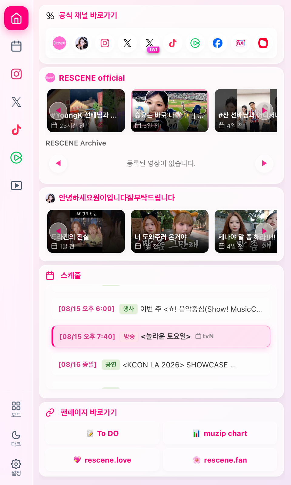
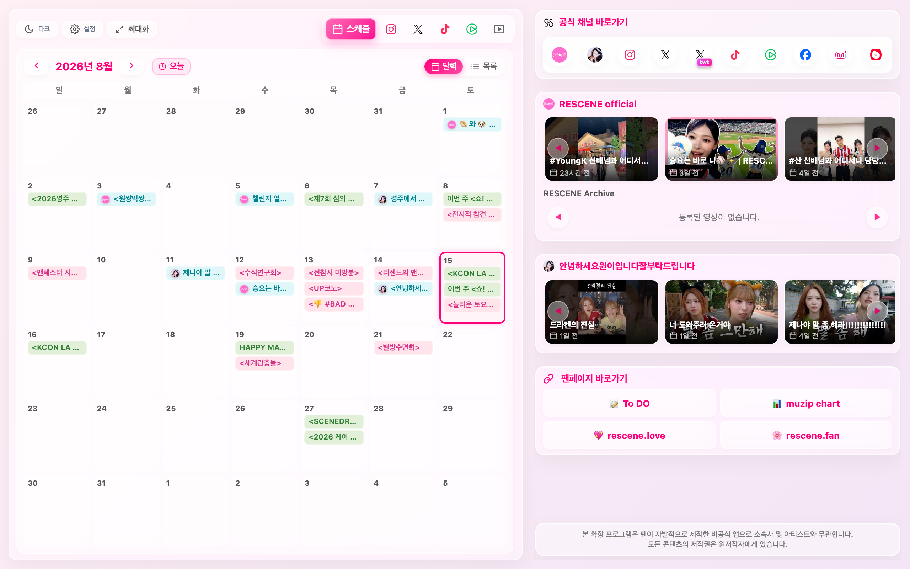
스케줄 캘린더부터 공식 영상, 소셜 피드까지 유용하게 쓰는 기능들을 모아두었습니다.
리센느의 방송, 행사, 앨범 일정을 월간 달력으로 한눈에 볼 수 있습니다. 다른 달을 보다가도 '오늘' 버튼을 누르면 이번 달 오늘 날짜로 바로 돌아옵니다.
시간 순서대로 정렬된 스케줄 목록에서 '지금' 버튼으로 현재 시간에 가장 가까운 일정을 바로 찾고, 출연 멤버 프로필 뱃지로 참석 정보를 확인합니다.
리센느 공식 유튜브 및 원이 채널의 새 영상과 실시간 라이브가 올라오면 브라우저 알림으로 알려드리며, 오늘 예정된 일정도 간략히 챙겨드립니다.
인스타그램, X(트위터) 공식 타임라인, 틱톡 챌린지 숏폼, 씬플릭스 영상 큐레이션을 별도 사이트 방문 없이 사이드패널에서 바로 볼 수 있습니다.
웹 서핑을 하면서 브라우저 옆에 띄워두고 쓰는 컴팩트 1단 사이드패널과, 큰 화면에서 보는 대시보드 뷰를 상황에 맞게 활용할 수 있습니다.
자주 보는 탭과 팬페이지 바로가기를 마우스 드래그로 끌어서 원하는 순서대로 배치하고, 안 쓰는 메뉴는 깔끔하게 숨길 수 있습니다.
개인적으로 사용하면서 개선이 필요했던 부분들을 다듬고 유용한 기능들을 추가했습니다.
다크/라이트 테마에 맞춘 글래스모피즘 스타일과 부드러운 슬라이더 전환 애니메이션을 적용하고 고해상도 벡터 아이콘으로 시인성을 높였습니다.
알림 On/Off, 사이드바 위치(왼쪽/오른쪽), 자동 새로고침 주기, 영상 음소거 여부, 탭 노출/순서 관리를 한곳에서 편하게 설정할 수 있는 설정 모달을 추가했습니다.
설정 창에서 상단 탭 순서와 팬페이지 바로가기를 마우스로 끌어서 자주 보는 순서대로 배치할 수 있도록 했습니다.
달력을 다른 달로 넘겨보거나 목록을 스크롤해 보다가도, 버튼 한 번으로 오늘 날짜와 현재 시간에 가장 가까운 일정으로 바로 돌아올 수 있습니다.
방송이나 행사에 어떤 멤버(원이, 리브, 미나미, 메이, 제나)가 참석하는지 스케줄 카드에 프로필 사진 뱃지가 표시됩니다.
영상을 보다가 다른 탭으로 이동하면 소리와 재생이 자동으로 일시정지되며, 확장 프로그램 실행 시 즉시 로딩되도록 성능을 최적화했습니다.
Remine Helper의 실제 화면 구성입니다.
웹 서핑 중 브라우저 옆에 띄워두고 사용하는 컴팩트 1단 세로 뷰입니다.
라이트 테마의 월간 달력과 오늘 이동 버튼
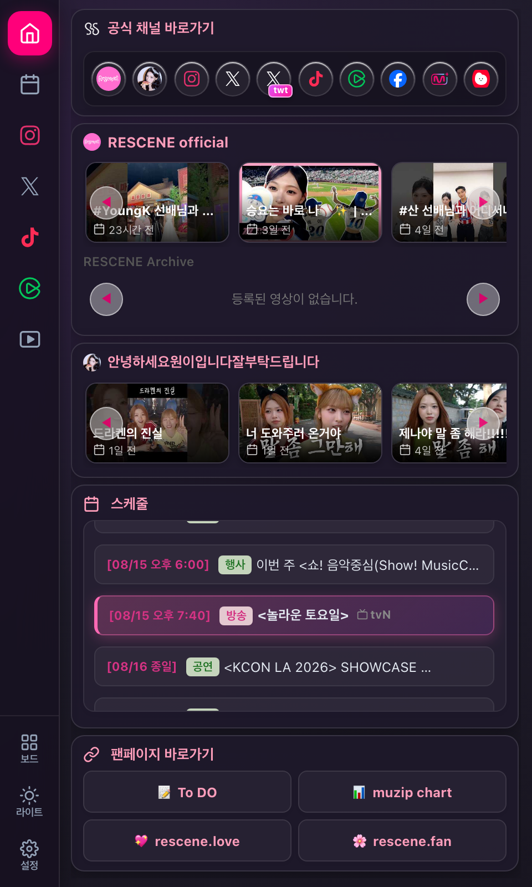
눈이 편안한 다크 테마의 월간 일정 뷰
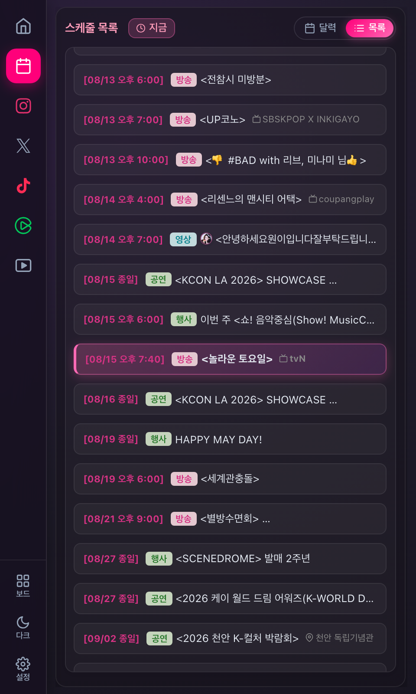
시간순 스케줄 목록과 현재 시간 빠른 이동
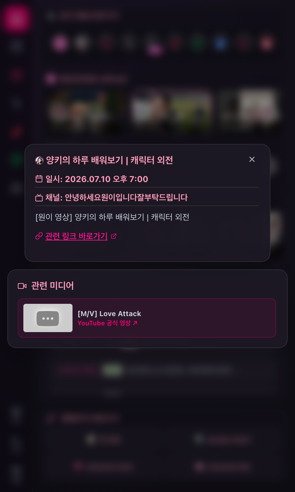
출연 멤버 프로필 뱃지와 관련 영상 미디어 카드
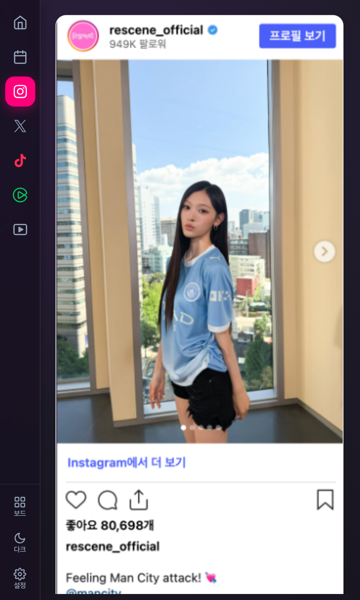
리센느 공식 인스타그램 게시물 피드
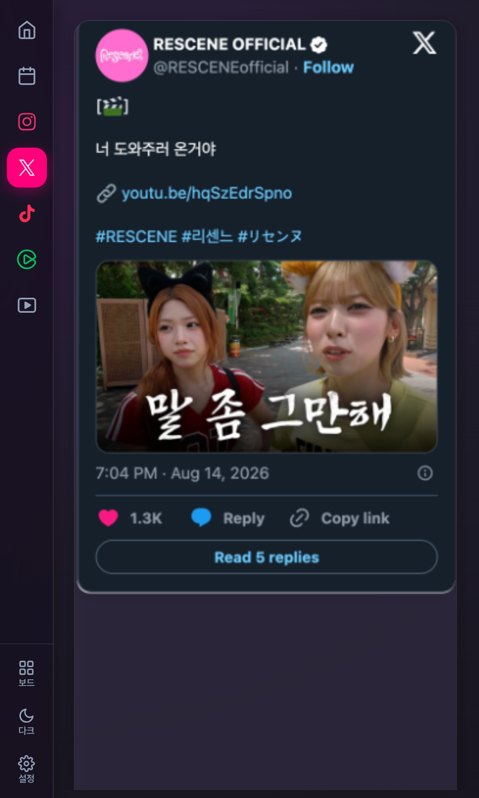
리센느 공식 X 계정 타임라인 피드
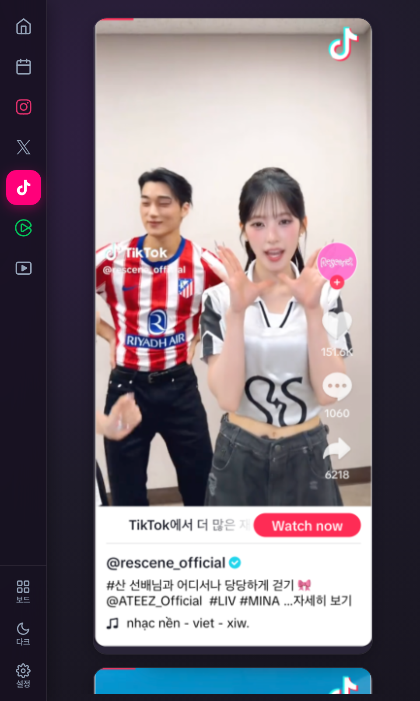
내장 플레이어로 감상하는 공식 틱톡 비디오
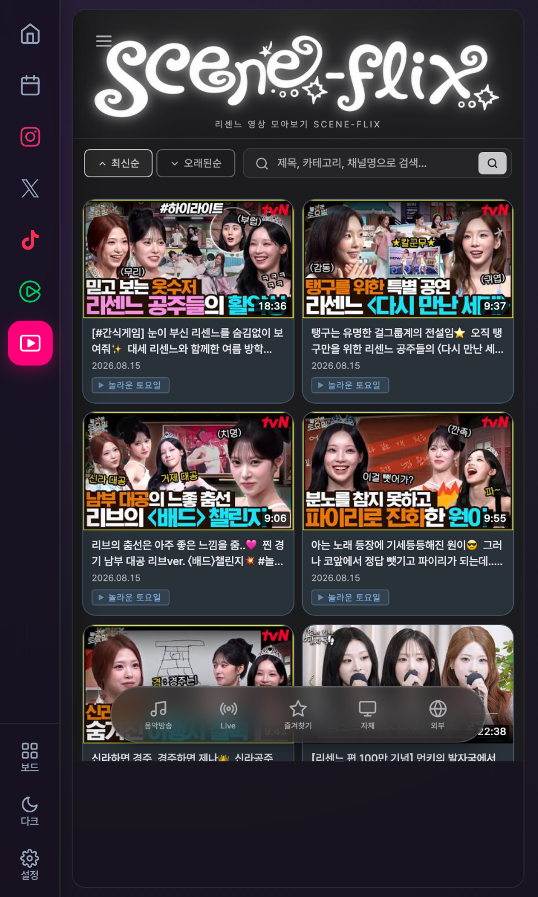
리센느 영상 큐레이션 사이트 연동 화면
넓은 화면에서 캘린더와 스케줄, 공식 영상을 한눈에 확인하는 풀스크린 뷰입니다.
월간 일정 그리드, 최신 유튜브 영상 카드, 공식 채널 바로가기
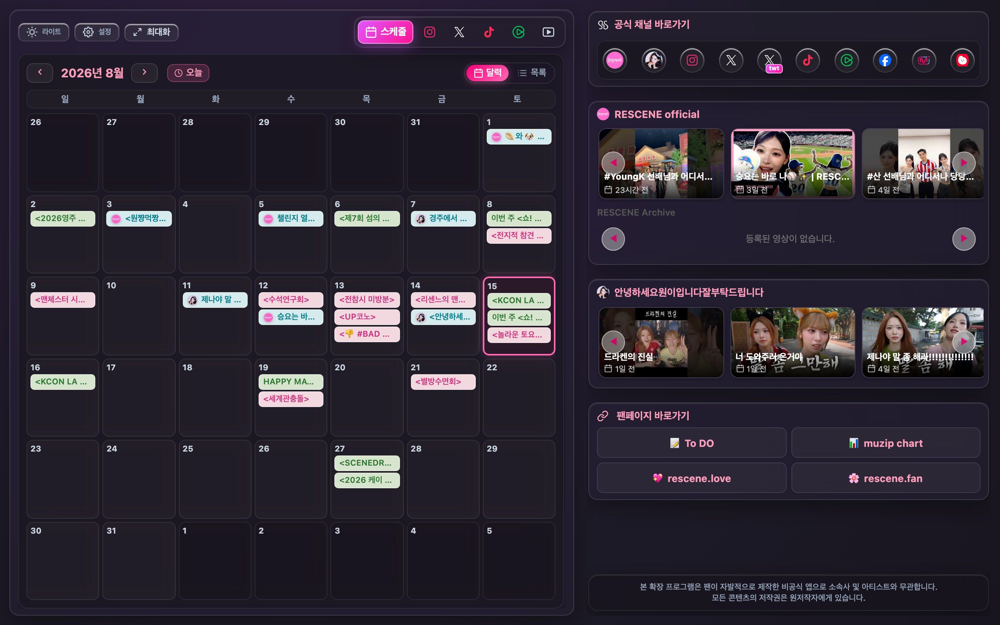
다크 테마 대시보드 메인 화면
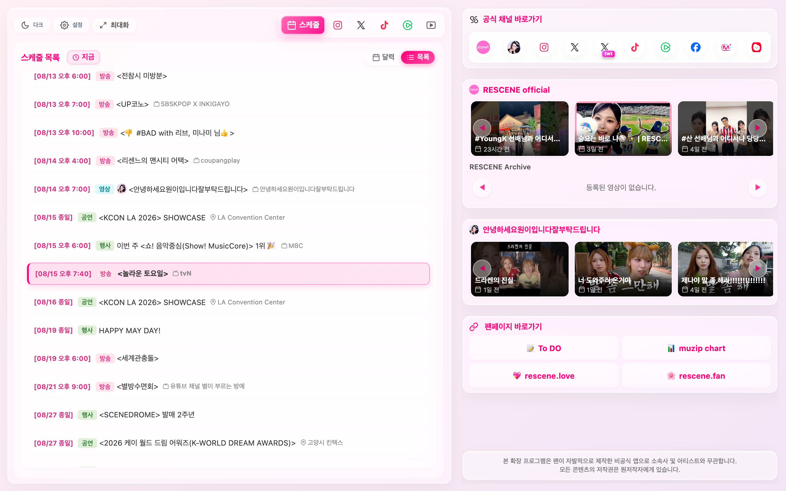
'지금' 빠른 이동 버튼과 넓은 타임라인 일정 목록
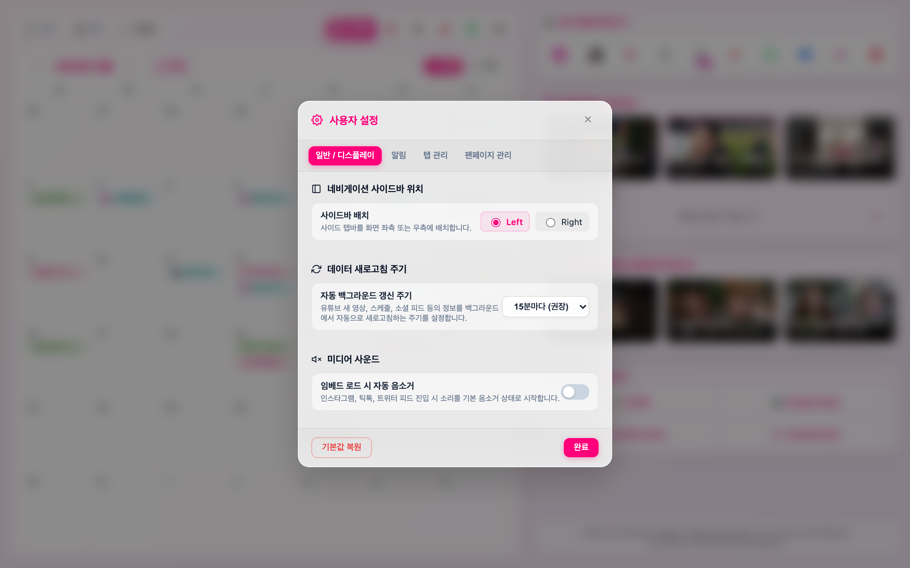
알림, 사이드바 위치, 탭 및 팬페이지 드래그 앤 드롭 순서 관리
사용하시는 브라우저에 맞춰 원클릭으로 쉽게 설치할 수 있습니다.
Chrome, Microsoft Edge, 네이버 웨일(Whale), Brave 등 모든 Chromium 기반 브라우저에서 공식 웹스토어를 통해 1초 만에 설치할 수 있습니다.
Firefox는 현재 파일 방식 수동 설치를 지원합니다. 아래 GitHub Release에서 최신 Firefox용 패키지를 다운로드하여 로드할 수 있습니다.
remine-helper-firefox-v1.0.2.zip 다운로드 및 압축 해제
about:debugging#/runtime/this-firefox 입력
manifest.json 선택!
Remine Helper 사용에 대해 궁금하신 점을 확인해보세요.
아닙니다. 본 프로그램은 리센느(RESCENE)를 응원하는 팬(Remine)이 자발적으로 제작한 비공식 팬메이드 브라우저 확장 프로그램입니다. 소속사(THE MUZE 엔터테인먼트) 및 아티스트와는 직접적인 관련이 없으며, 모든 공식 콘텐츠의 저작권은 원저작자에게 있습니다.
Remine Helper는 Micro-SWR 0ms 캐시 아키텍처와 Page Visibility Throttling 기술을 적용하여 개발되었습니다. 브라우저 탭을 열고 있지 않거나 다른 작업을 할 때는 리소스를 거의 소모하지 않으며, 탭 진입 시에만 필요한 최소한의 데이터를 초고속으로 렌더링합니다.
절대 수집하지 않습니다. Remine Helper는 별도의 외부 백엔드 서버를 운영하지 않으며, 사용자의 테마 설정, 탭 순서, 알림 설정 등 모든 데이터는
사용자의 로컬 브라우저 저장소(chrome.storage.local)에만 안전하게 보관됩니다.
1. 브라우저 설정에서 Chrome/Edge의 **'알림 권한'**이 허용되어 있는지 확인해 주세요.
2. 운영체제(Windows 알림 설정 / macOS 시스템 설정 > 알림)에서 브라우저의 데스크톱 알림이 허용되어 있는지 확인해 주세요.
3. 확장 프로그램의 **'사용자 설정 > 알림'** 탭에서 알림 옵션이 켜져 있는지 확인해 주세요.
Chrome Web Store 정책 준수를 위해 웹스토어 정식 배포 버전에는 커뮤니티(DCinside) 탭이 제외되어 있습니다. 그 외 스케줄 캘린더, 공식 유튜브 알림, 인스타그램, 틱톡, 네이버 클립, 공식 채널 허브 등 모든 핵심 기능은 완벽하게 동일합니다.